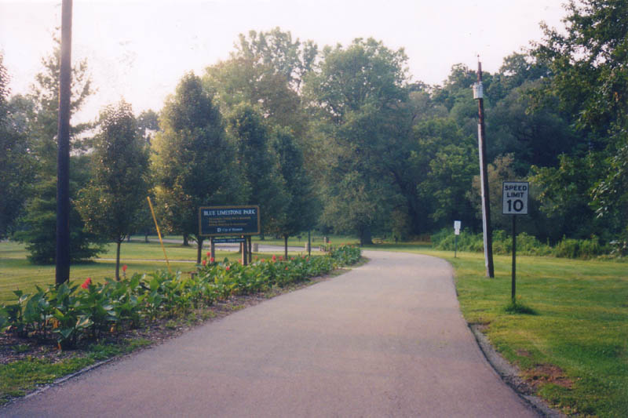
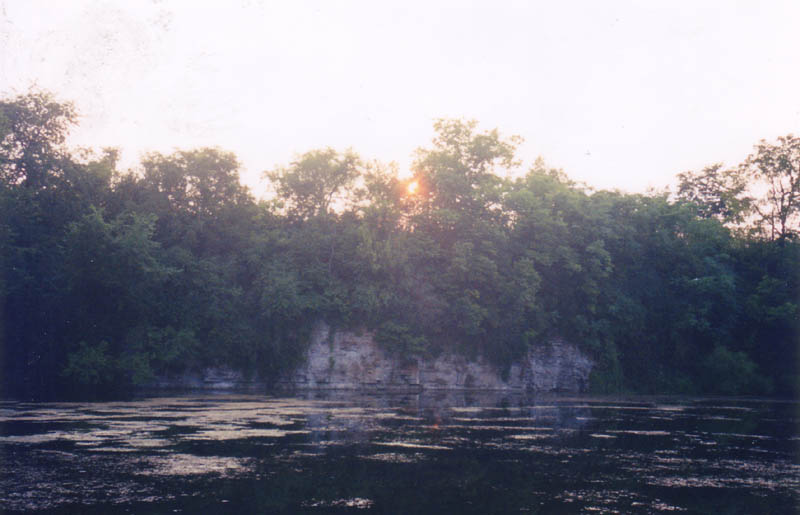
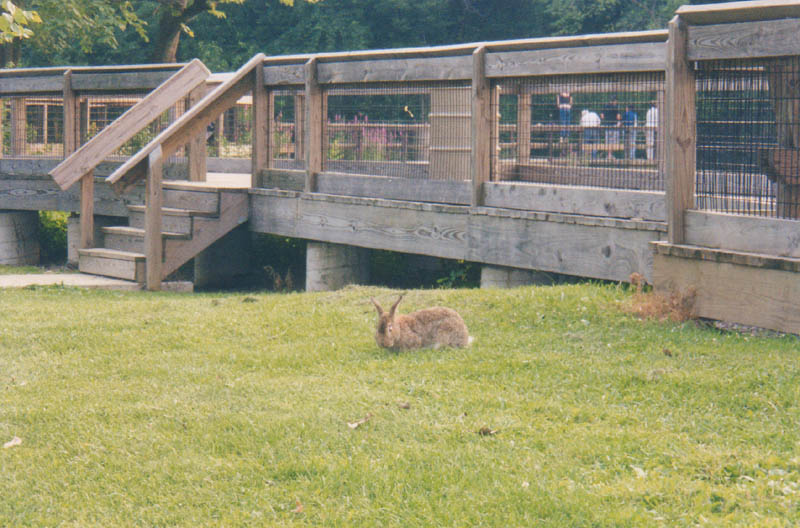
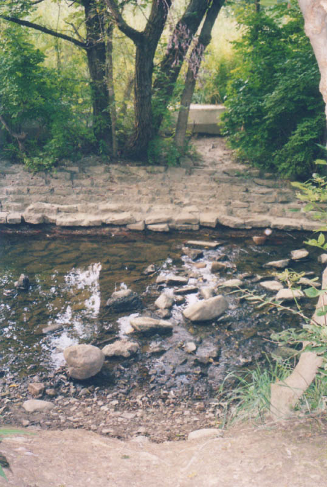
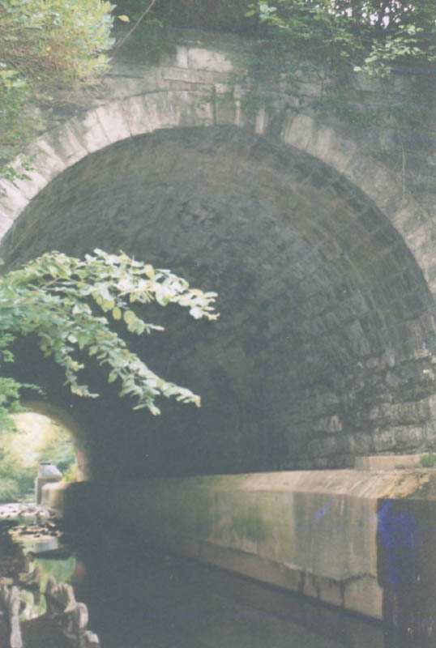
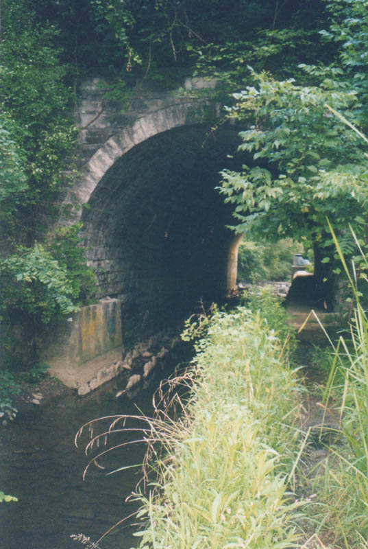
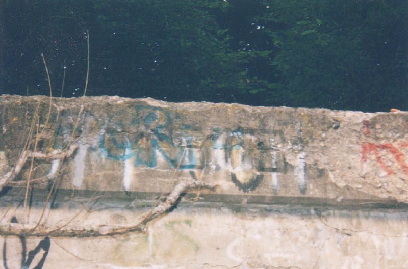

What's going on at Blue Limestone Park? According to legend, a lot of spirit activity. Reports circulating on the internet and elsewhere make the claim that this park in Delaware is home to "literally dozens" of ghosts. A story on the "Castle of Spirits" website describes an encounter with some of them, but then it goes on to talk about how the guy who wrote it became the park's psychic protector and all kinds of weirdness.
Interestingly, I later heard from the author of this story, Mike Shaffer. He asked me to help him clear some of the facts up, so here, in his own words, is his correction and clarification of what he really experienced at Blue Limestone Park:
Much to my shame at present, I'm the author of that awful story. I was
encouraged to write it by a couple of folks - much of what I wrote was
true - we did explore the place, both in daylight and at night, and did
hang out with folks who were totally into the "wiccan" thing, and they
did some sort of ritual thing there. However, as with a lot of stories
on Castle of Spirits, there's more than a little embellishment. I
can't say I didn't get the creeps there, or didn't see lights I couldn't
readily explain (though they could have been reflections or whatever).
But I can say it's mostly just story, not truth.
There was also a lot of the story that was added to by the folks who
encouraged me to write it. Kind of like a classic fish story, it grew
and grew. I'm really quite ashamed of having written it at this point,
and I'd say a good 50% is fiction. So, to set the record straight,
here's the facts:
There are two back quarries, and the area is extremely creepy at night.
Inside the tunnel, if you listen hard, it does sound like voices,
though that could be a trick of the acoustics. There's some odd things
with the tracks, both not carrying the vibration of a coming train and
also not carrying heat from the passing. Both could also be from the
tunnel being under it. There are parts of the tunnel you can't get to
anymore - you used to be able to go to the top of the back side of the
tunnel from the sides, but erosion took most of the footholds away. There
are a number of concrete pieces hidden in the woods surrounding the
tunnel, most of which look like they were part of the tunnel. How they
got there I don't know - they're a good thirty to forty yards away in the
trees, but they look like the emplacements at the top of the tunnel
beside the train tracks.
The graffitti mentioned in the story was real. There was a pentegram
on top of the sewer pipe, there was a "you missed one" on the walls
weeks later, and there is a second sewer pipe in the back area, about a
hundred yards to the left of the tunnel. Then again, there's tags all
over that place, it's sort of what folks do down there.
I really admire Mike for having the guts to be honest about this; saying you were wrong and admitting to any kind of fabrication can be a pretty tough thing to do. It's very helpful to those of us who are interested in researching ghost stories to know for sure what's true and what's not.
One of the other stories about Blue Limestone says that a major train accident occurred near the quarry sometime in the 1920s. I'll definitely look into this claim a little further.

An investigatory trip Katydid and I took to Blue Limestone Park took us through a unique and lovely park built around an old limestone quarry. The quarry pit is now a mossy lake bordered on one side by jagged cliffs, along which runs a railroad, and on the other side by a park-built wooden deck. Fishing from the deck seems to be one major reason people visit the park (the lake is stocked), but there is also playground equipment for kids. And there are rabbits everywhere; the place is lousy with rabbits, in much the same way that Greenlawn Cemetery is infested with cute groundhogs.

But it's not what's up front at Blue Limestone Park that's truly interesting; it's what's in the back. Cross a long field along the righthand side of the lake, and go through a gap in the trees, and you'll come to a place where you can cross the creek, when the water is low enough. Here you can begin to see the rocks and mortar that the railroad workers laid.

Once you cross the creek you'll find yourself below the railroad embankment, on a path that leads into, and through, an arched tunnel. The tunnel is there simply to allow the creek to flow under the tracks, but it's very large and ornate, and includes a walkway. It put me in mind of the Moonville Tunnel.

This is the Graffiti Tunnel, according to some people we met at the park. It certainly has its share of graffiti covering the bricks inside, and it's not hard to imagine local teenagers coming out here to smoke pot and drink cheap beer. It's also not hard to imagine it as being haunted. The playgrounds and the driveway out front are fairly standard, but this tunnel is plenty scary at night.

The following picture shows a date engraved above the arch on the side not facing the park. It's hard to read, but you might be able to make it out; it says 1918.

We visited Blue Limestone Park at dusk in August of 2003, and made every effort to watch for supernatural activity of any kind. We even split up on the far side of the tunnel, when I went off through the weeds to explore further down the tracks. It was definitely creepy and quiet, and the limestone cliffs and railroad tunnel made for an interesting exploration, but no ghosts appeared to us this time around. Check the park out sometime and maybe you'll have better luck. The entrance runs off Elizabeth Street in Delaware.
Castle of Spirits Ghost Story: Blue Limestone Park
Shadowseekers: Blue Limestone Quarry
City of Delaware Recreation Services Department
Back
forgottenohio@yahoo.com